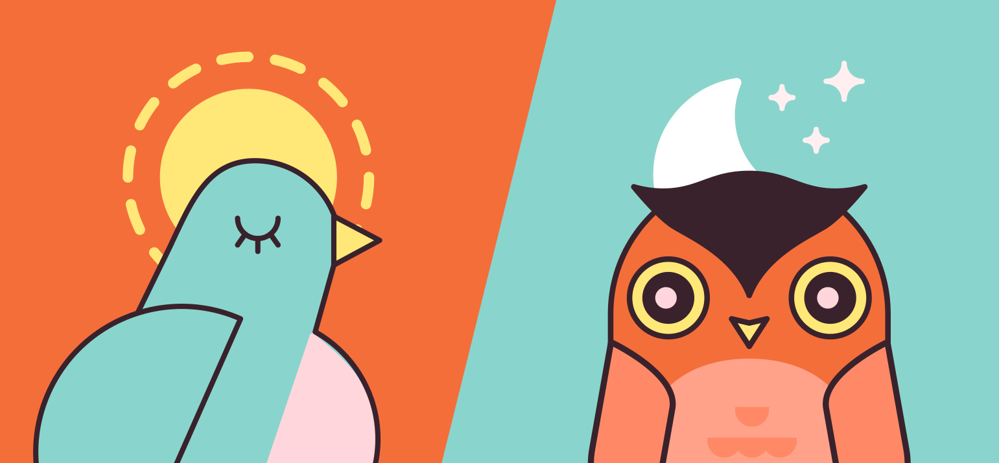
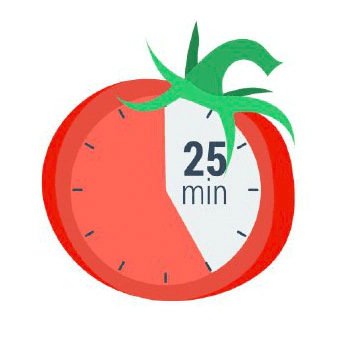
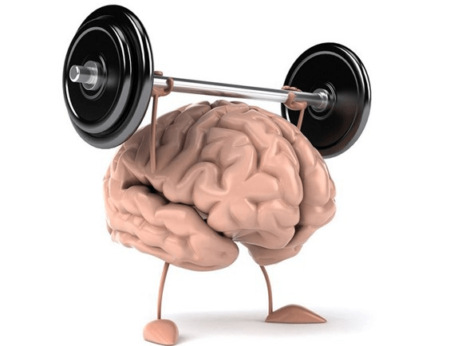

Choosing a primary color for your site can be one of the most important design decisions you make. Use this quick color reference to choose meaning and the emotions that it illicits. Keep in mind the vibrancy of the color. Brighter shades of the color give your audience a sense of urgency while darkening the color can allow your audience to become more immersed in it.
ПРАВИЛО №1
СОБЛЮДЕНИЕ ПИТЬЕВОГО РЕЖИМА
Сколько воды необходимо выпивать в сутки?
ОТВЕТ: от 2 до 2,5 литров
Как правильно пить воду?
ОТВЕТ: небольшими глотками на протяжении всего дня
К чему может призвести недостаток воды?
ОТВЕТ: плохое самочуствие, тошнота, сонливость
|
Социальное образование |
Приблизительное количество людей |
Приблизительный обьём води (в литрах) |
|
Ваша семья |
4 |
6,5 |
|
Жители вашего дома |
126 |
204,75 |
|
Жители Кривого Рога |
634 780 |
1 031 517,5 |
|
Жители Украины |
41 902 400 |
68 091 400 |
|
Все люди планеты Земля |
7 530 000 000 |
12 236 250 000 |
ПРАВИЛО №2
СОБЛЮДЕНИЕ НОРМЫ КАЛОРИЙ
Калькулятор ежедневной нормы калорий
Формула Миффлина-Сан Жеора – это одна из самых последних формул расчета калорий для оптимального похудения или сохранения нормального веса. Она была выведена в 2005 году и все чаще стала заменять классическую формулу Харриса-Бенедикта.
Формула Миффлина-Сан Жеора, разработанная группой американских врачей-диетологов под руководством докторов Миффлина и Сан Жеора, существует в двух вариантах – упрощенном и доработанном и выдает необходимое количество килокалорий (ккал) в сутки для каждого конкретного человека.
1. Упрощенный вариант формулы Миффлина-Сан Жеора:
- для мужчин: 10 х вес (кг) + 6,25 x рост (см) – 5 х возраст (г) + 5;
- для женщин: 10 x вес (кг) + 6,25 x рост (см) – 5 x возраст (г) – 161.
2. Доработанный вариант формулы Миффлина-Сан Жеора, в отличие от упрощенного дает более точную информацию и учитывает степень физической активности человека:
- для мужчин: (10 x вес (кг) + 6.25 x рост (см) – 5 x возраст (г) + 5) x A;
- для женщин: (10 x вес (кг) + 6.25 x рост (см) – 5 x возраст (г) – 161) x A.
A – это уровень активности человека, его различают обычно по пяти степеням физических нагрузок в сутки:
- Минимальная активность: A = 1,2.
- Слабая активность: A = 1,375.
- Средняя активность: A = 1,55.
- Высокая активность: A = 1,725.
- Экстра-активность: A = 1,9 (под эту категорию обычно подпадают люди, занимающиеся, например, тяжелой атлетикой, или другими силовыми видами спорта с ежедневными тренировками, а также те, кто выполняет тяжелую физическую работу).
Калькулятор для мужчин
Калькулятор для Женщин
ПРАВИЛО №3
СОБЛЮДЕНИЕ ЗДОРОВОГО ОБРАЗА ЖИЗНИ
Зачем необходимо делать зарядку ?
Ответ: Утренняя зарядка не только взбодрит тело с утра, но и придаст бодрости организму на целый день, увеличит поступление кислорода в организм и тем самым увеличит работоспособность мозга
К каким последствиям может привести отсутствие
физических упражнений ?
Ответ: Вялость, лишний вес.
Как смотивировать себя делать зарядку ?
Ответ: Вариантов много. Главное чтобы вы этого хотели
КАК Я ВЫПОЛНЯЮ ЗАРЯДКУ
ПРАВИЛО №4
СОБЛЮДЕНИЕ ЗДОРОВОГО РЕЖИМА СНА
1. Здоровый сон
Специалисты организации Nemours, которая занимается здоровьем детей,
считают, что подростки должны спать около девяти часов в сутки.
Тинейджеры редко столько лежат в кровати.
Как сон влияет на подростковое здоровье?
* Помогает подростку полноценно расти и развиваться;
* Напрямую влияет на внимательность и успехи в школе;
* Помогает добиваться успехов в спорте;
Нарушения сна приводят к многочисленным сложностям со здоровьем
лишний вес и проблемы с сердцем, нарушения иммунитета
и эмоциональные проблемы
У подростков сбиваются биологические часы
В подростковом возрасте режим сна заметно отличается от детского или
взрослого. В этот период «сбрасывается» циркадный ритм (или
биологические часы), из-за чего тинейджеры засыпают и просыпаются
позже. Считается, что это связано с мелатонином — гормоном, который
регулирует наши биологические часы.У подростков он вырабатывается
позже, чем у маленьких детей или взрослых, что приводит к тому, что
ребёнок не хочет спать по вечерам.
Мешают стресс и гаджеты
Есть и ещё одна причина нарушения сна — стресс. В подростковом возрасте
у ребёнка больше обязанностей: ЕГЭ, репетиторы, грядущее поступление,
половое созревание. Мозг постоянно возбуждён.
Также достаточно распространённая причина нарушения сна — привычка
ложиться спать с телефоном или планшетом. Большое количество
информации не даёт мозгу успокоиться, поэтому подростку тяжело заснуть
К слову, такой же эффект вызывают поздние раунды в Fortnite или «Доту».
Как помочь подростку высыпаться?
Вот советы, которые помогают выровнять режим сна
* Ложиться спать и просыпаться в одно и то же время, даже в выходные;
* Больше физической активности, но, главное, не перед сном (нужно около
трёх часов, чтобы организм успокоился);
* Пить меньше кофе, чая и энергетиков;
* Перестать пользоваться электроникой хотя бы за час до сна;
* Зажигать в комнате подростка ночник и проветривать по вечерам
Последствия недосыпа
ЕСЛИ подростки не получают положенных 3-10 часов сна каждую ночь, они могут столкнуться со многими неприятными
последствиями, такими как
* Депрессия. Согласно исследованиям, молодые люди, которые ложатся позже, более склонны к развитию депрессии и мыслям
о самоубийстве. В мозгу, похоже, существует связь между сном и депрессией.
* Плохие оценки. У подростков, которые не высыпаются, обычно появляются проблемы с памятью и школьной успеваемостью.
* Поведение. От нехватки сна может снижаться внимание, как результат — гиперактивность и новые скандалы
* Дорожно-транспортные происшествия. У сонного подростка, как правило, замедленная реакция, поэтому он рискует стать
участником ДТП
Сколько нужно спать людям в разном возрасте, чтобы быть здоровыми:
* Новорожденные (до 3 месяцев) -14-17 часов
* Дети (4-11 месяцев) -12-15 часов
* Дети (от1 года до 2 лет) -11-14 часов
* Дошкольники (3-5 лет) -10-13 часов
* Школьники (отб до 13 лет) — 9-11 часов
* Подростки (14-17 лет) — 8-10 часов
* Взрослые (18 лет - 64 года) - 7-9 часов
* Пожилые люди старше 65 лет — 7-8 часов.
| Член семьи | Возраст | Ложиться спать | Встает | Всего спит | Должен спать | Вывод |
| Я | 14 | 00:00 | 8:00-12:00 | 6-10 часов | 8-10 часов | частичный недосып |
| Мама | 39 | 23:00 | 8:00-9:00 | 7-8 часов | 7-9 часов | нормальный режим сна |
| Папа | 40 | 23:00 | 7:00 | 6 часов | 7-9 часов | недосып |
Этический вывод:
1. Каждый человек должен нести индивидуальную ответственность перед семьей
и обществом за свое здоровье, путем соблюдения здорового образа жизни, в
том числе и режима сна
2. Проживая в сообществе других людей, каждый из нас обязан заботиться о
здоровье ближних и стараться поддерживать других в соблюдении режима
3. При наличии в семье людей с различными хронотипами мы должны уважать их
возможности и потребности, и если человек лег слать - необходимо
поддерживать все условия, необходимые для его полноценного сна: тишину,
тепло, темноту вокруг.
Что такое хронотип?
Хронотип - это характер организации суточных (циркадных биоритмов человека.
 Хронотип отражает суточную динамику функциональной активности различных органов и систем организма (время пробуждения и засыпания, работоспособность, 24-часовой риты артериального давления и др.)
В зависимости от активности человека в то или иное время суток выделяют 3 хронотипа
«экаворонки» - утренний тип;
«голуби» - дневной тип;
«совы» - вечерний тип
Психофизиологические различия утреннего и вечернего типа
| Пареметр | "Жайворонок" | "Сова" |
| Время пробуждения | 4.00 - 6.00 | 8.00 - 10.00 |
| Время засыпания | 20.00 - 22.00 | 24.00 - 2.00 |
| Пик активности | 8.00 - 10.00 | После 16.00 |
| Доминируюшее полушарие головного мозга | левое | правое |
| Творческая активность, воображение | меньше | больше |
| Характер мышления | Абстрактно-логическое, аналитическое | Конкретно-предметное, холистическое |
Название теста
1. Трудно ли вам вставать рано утром?
2. Если у вас есть возможность выбора, в какое время вы бы ложились спать?
3. Какой завтрак вы предпочитаете в течение первого часа после пробуждения?
4. Если вспомнить ваши последние размолвки на работе и дома, когда они преимущественно происходили?
5 .От чего легче отказаться:
6. Как точно вы рассчитываете время в течение 1 минуты?
7. Как легко вы можете изменить привычки, связанные с едой, во время отпуска?
8. Если рано утром предстоят важные дела, насколько раньше вы ложитесь спать?
9 Если вы ложитесь спать в 23.00, то какова степень вашей усталости?
10. Какова степень вашей зависимости от будильника, если утром вы должны встать в определенное время?
11. Как вы деятельны в первые полчаса после утреннего вставания?
12. Вы решили заниматься физкультурой .Ваш друг предложил заниматься дважды в неделю, по 1 часу утром, между 7 и 8 часами утра. Будет ли это благоприятным временем для вас?
13. Вам предстоит какая-либо работа или отъезд ночью, между 4 и 6 часами. На следующий день у вас нет никаких обязанностей .Какую из следующих возможностей вы выберете?
14. Иногда говорят “утренний человек ” и “вечерний человек”. К какому типу вы себя относите ?
15. У вас возникло решение серьезно заниматься закаливанием организма. Друг предложил делать это дважды в неделю, по 1 часу , между 22 и 23 часами вечера. Как вас устраивает это время?
Вы - «жаворонок». Ваши биологические часы идут быстрее, чем астрономические. Соответственно, Вы раньше ложитесь спать и раньше встаете. В ряде случаев при значительном несовпадении биологических и астрономических часов эта проблема может ухудшать качество жизни и рассматривается как расстройство сна, получившее название СИНДРОМ ОПЕРЕЖЕНИЯ ФАЗЫ СНА.
Вы - «сова». Ваши биологические часы идут медленнее, чем астрономические. Соответственно, Вам трудно заснуть вечером и трудно проснуться утром. В ряде случаев при значительном несовпадении биологических и астрономических часов эта проблема может ухудшать качество жизни и рассматривается как расстройство сна, получившее название СИНДРОМ ЗАДЕРЖКИ ФАЗЫ СНА.
Вы - «голубь». Ваши биологические часы идут приблизительно так же, как и астрономические. Это наиболее благоприятный тип суточного ритма, при котором не возникает проблем как с отходом ко сну, так и с подъемом.
ПРАВИЛО №5
СОБЛЮДЕНИЕ РЕЖИМА ТРУДА И ОТДЫХА
«Метод помидора»
Всего 5 простых шагов:
-
Определите и четко сформулируйте задачу.
Очень важно понимать, что и зачем вы собираетесь делать следующие 25 минут

-
Заведите таймер на 25 минут.
Почему 25? Согласно исследованиям психологов, человек может концентрироваться на чем-то максимум 50 минут. 25 минут — это один «помидор». Один помидор беспрерывной работы -
Приступайте к работе, пока не зазвонит таймер.
Дайте себе слово, не отвлекаться от задачи все 25 минут, Ни на звонки, ни на сообщения или письма, ни на коллег. Только работа над поставленной задачей -
Сделайте перерыв на 5 минут.
Можно ответить на пропущенные звонки и письма, а лучше встать и размяться. -
После 4 помидоров сделайте большой перерыв.
25
:
00
ПРАВИЛО №6
ЭФФЕКТИВНОЕ ПЛАНИРОВАНИЕ
Важность планирования
Если вы планируете эффективно и с умом, то это умение позволяет вам:
- Понимать, за какое время реально достичь определенной цели.
- Убеждаться, что у вас есть достаточно времени для выполнения самых важных задач.
- Планировать время на случай непредвиденных обстоятельств.
- Избегать брать на себя такое количество дел, которые вы не сможете выполнить.
- Упорно работать над своими личными и карьерными целями.
- Иметь достаточно времени на семью, друзей, саморазвитие и хобби.
- Достигать баланса в жизни.
Время нельзя купить или замедлить, зато его можно потратить впустую и сожалеть о прошлом. Планирование помогает получать удовольствие от настоящего и стремиться преуспеть в будущем.
Как планировать свое время
Многие вещи лучше всего делать прямо сегодня и сейчас, однако начать планировать лучше всего в начале недели или месяца и делать это регулярно. Впрочем, если вы фрилансер, то можете начать сейчас.
Существуют сотни самых разных методик и приложений, которые позволят вам эффективно планировать свое время. Например:
- Wunderlist
- Trello
- Todoist
- Any.do
Эти сервисы удобны, они позволяют вводить легко данные, получать обратную связь в виде графиков и дополнительной информации.
Чек-лист
ДобавитьПРАВИЛО №7
АКТИВАЦЫЯ МОЗГА
ТРЕНИРОВКА МОЗГА – ПРАВДА ИЛИ МИФ?
В ходе многочисленных исследований нейрофизиологам удалось установить, что определенные движения тела влияют на состояние мозга. Следовательно, если выполнять специально подобранные упражнения, мозг можно развивать. И в этом нет ничего удивительного, ведь организм человека – это целостная система, в которой тело и ум тесно взаимосвязаны.
Американские исследователи Гейл и Пойл Деннисон пошли дальше своих коллег и разработали целую программу интеллектуального развития – нейрогимнастику, то есть гимнастику для мозга.
Нейрогимнастика – это комплекс упражнений, направленных на активацию естественных механизмов работы мозга через выполнение физических движений. Упражнения объединяют движение и мысль, то есть активизируют и задействуют связи между системами «тело» и «ум».
ПОЛОЖИТЕЛЬНЫЕ ЭФФЕКТЫ НЕЙРОГИМНАСТИКИ
- лучшее восприятие и запоминание новой информации;
- улучшение состояния нервной системы;
- развитие мелкой моторики, памяти, внимания, речи;
- раскрытие скрытых способностей мозга;
- синхронизация работы правого и левого полушарий головного мозга.
Согласно подсчетам, лишь 10 % населения планеты задействуют правое «творческое» полушарие мозга наравне с левым «логическим». Но также доказано, что максимального умственного развития можно достичь только при скоординированной работе сразу 2 полушарий. Если вы хотите вырастить своего ребенка умным и самодостаточным, приложите все усилия для гармоничного развития его мозга.
УПРАЖНЕНИЯ ДЛЯ ДЕТЕЙ В ВОЗРАСТЕ ОТ 7 ДО 12 ЛЕТ
1. Непривычное рисование. Одновременно правой и левой рукой рисовать одинаковые рисунки.
Что дает: развивает моторику, улучшает пространственное восприятие, синхронизирует полушария мозга.
2. Кулак – ребро – ладонь. Выполнить поочередно 3 движения: сжать ладонь в кулак, поставить ребром на стол, положить ладонью вниз. Сначала одной рукой, потом другой, затем двумя руками одновременно.
Что дает: активизирует процессы чтения и письма, повышает концентрацию, улучшает мыслительные процессы.
3. Восьмерки. Рисовать в воздухе перед собой восьмерки – от центра по часовой стрелке, а потом против. Следить за движениями только глазами, не поворачивая голову.
Что дает: активизирует мыслительные процессы, снимает лишнее напряжение, подготавливает к восприятию визуальной информации.
4. Слон. Стоя, немного согнуть колени, наклонить голову к плечу, вытянуть руку вперед и рисовать ею в воздухе восьмерки – от центра против часовой стрелки. Выполнить поочередно каждой рукой.
Что дает: запускает мыслительные процессы, активизирует творческое мышление.
5. Кнопки мозга. Стоя, массировать одной рукой область возле пупка, а другой – углубление под ключицей.
Что дает: помогает проснуться, подготавливает мозг к усвоению информации, уравновешивает вестибулярный аппарат.
ПРАВИЛО №8
ЭМОЦИОНАЛЬНАЯ ПОДДЕРЖКА
Современное общество диктует сценарий, при котором человек должен рассчитывать только на
себя. Спасение утопающих — дело рук самих утопающих. В своем исследовании современной
культуры Запада психолог Пол Экман писал: «Если мне хорошо, то почему я должен
заботиться о других, — ведь я не нуждаюсь в них для того, чтобы обезопасить себя. Я не
нуждаюсь в них для того, чтобы справиться с имеющимися угрозами».
Несмотря на это, у каждого из нас в жизни случаются кризисы, изменения и временные спады
жизненных сил. Не получив понимания и поддержки в нужный момент, мы можем замыкаться в
себе, вынашивать обиду, которая со временем может трансформироваться в гнев на себя и весь
мир. Последствия этого могут быть самые разрушительные.
Когда особо необходима поддержка? Поддержку можно и нужно оказывать человеку, который находится во взрослой и проактивной позиции, но имеет недостаточно эмоциональных (энергетических) ресурсов, чтобы самостоятельно справиться с ситуацией.